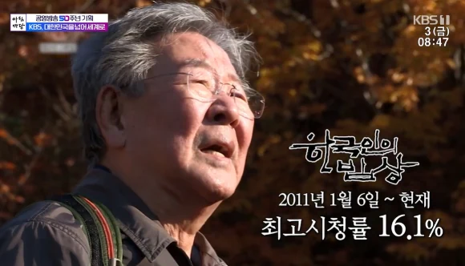
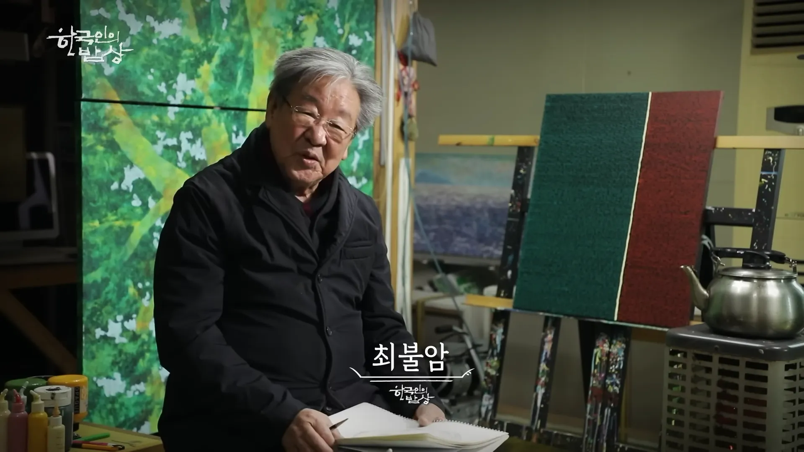

선생님...그립습니다


선생님...그립습니다
이런 방송이 있었구나
극한직업 명대사
" 내가 한국인의밥상도 안봐 최불암 선생님 보면 수사반장이 떠올라서 "
포항 사나이들의 ~~~~
방송계의 로우바둑이
그래도 지금은 수종이형님이 잘 하고 계심 ㅠ
각설이지만 음식다큐는 누들로드가 젤 잼더라
파하~. 하는 웃음소리는 영원할겁니다
나레이션이 진국이었는데
저 특유의 나긋나긋한 목소리 덕분에 방송이 보기 편했지..
저 멸치국수 편은 진짜 레전드
16.1% 레전드네 ㅋㅋㅋㅋㅋ
김치말이 행님은 진짜 전설이다
저거 볼때마다 국수해먹음 ㅋㅋㅋㅋ
저 젓가락질이 킥이였지
시원하이 맛있쬬?
그 레전드 물회먹방도 한국인의 밥상 아님?
물회가 레전드였지
저거 찍으시면서 건강 좋아지셔서 오래 살아계셨지
고명에 김치 김 올린 잔치국수는 저렇게 사알짝 굵은 면이 맛있음ㅋㅋㅋㅋ
북정은이도 본다더라
생로병사의 비밀도 챙겨봤다는게 어이가 없더라ㅋㅋ돼지쉐끼 사람들 굶겨 죽이는 새끼가 하..
눈물